(In Chinese) 聪明人用方格笔记本-阅读摘抄
进化笔记本：学习、工作、博弈
笔记本三法则
- 法则1： 使用方格笔记本
- 法则2: 在笔记本上方的空白区域标出题目
- 法则3: 用三分法记录： 事实-》解释-》行动
笔记本要求
- 看起来工整
- 比A4纸d大
- 颜色不超过三种
- 每一页都有一个主题
- 是黑板，白板板书内容的提炼
- 留有空白区域
- 画有许多图，表，画
- 日后看笔记时依然可再现当时的内容
笔记的生命线是‘再现性’，这是记笔记的终极目的。
使用方格笔记本
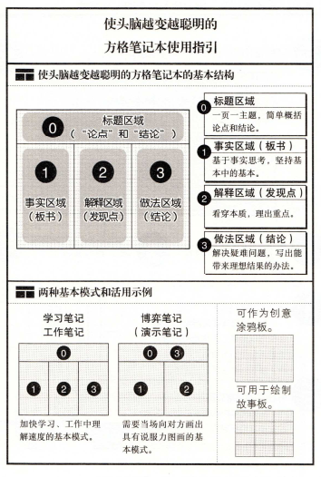
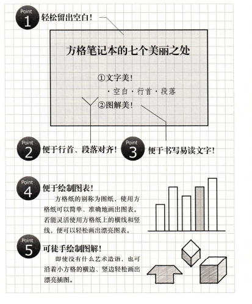
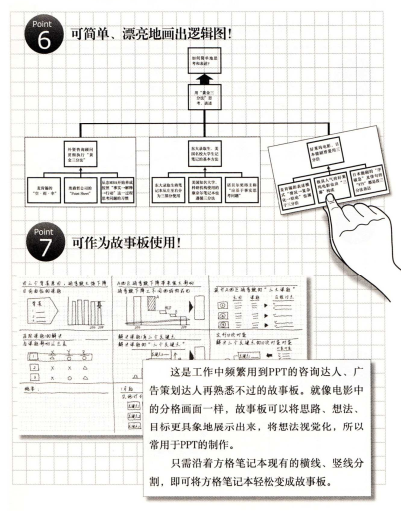
使用方格
- 行首对齐
- 在行首空两三个字的地方写小标题
- 在比小标题往后两三个字的地方写内容
- 项目改变时空一行
- 注意留出空隙，留出进行信息整理的空间
- 左右相对的两页记录一个信息点
学习需要有‘框架’。 框架 = 整理思路的书架
黄金三分法
- 康奈尔笔记本： 板书／发现／总结
- 咨询公司： 事实／解释／行动
东大录取生的笔记本
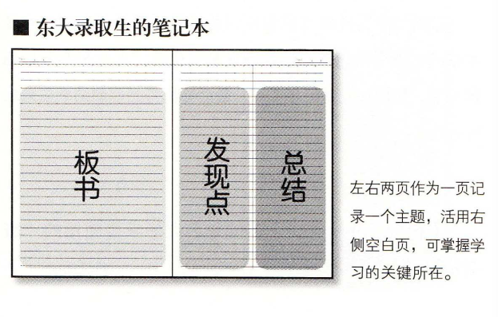
- 左右两页作为一页使用。
- 右侧先空下，左侧记板书。
- 右侧左边记点评和疑点，右侧右边记采取的行动和总结。
康奈尔笔记本
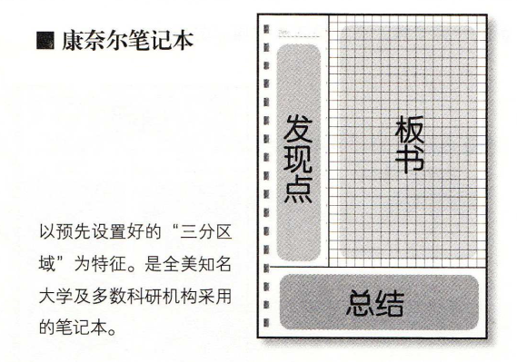
埃森哲Point Sheet
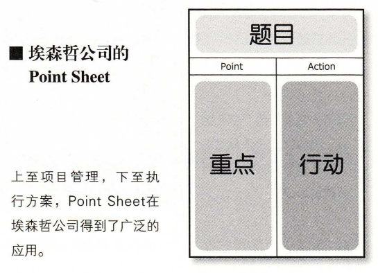
- 左侧记录重点
- 右侧记录采取的行动： 谁，在什么时间之前， 需要完成什么事
麦肯锡笔记本
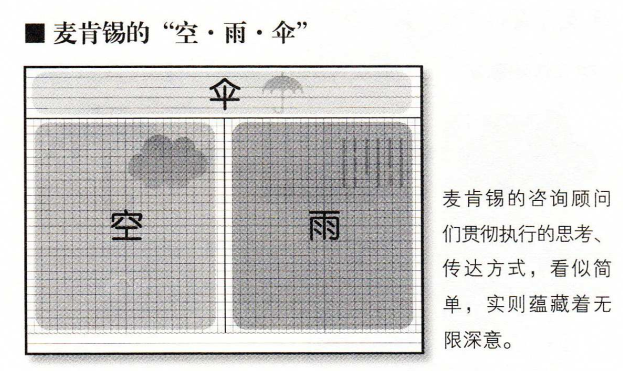
- 空：现在的情况
- 雨：对此情况的解释
- 伞：根据此解释而采取的行动
使用笔记本
横向使用方格笔记本
由于人的眼睛时左右横向排列的，所以横向的视野比纵向的视野开阔
A4笔记本为根本
- 小笔记本无法总结想法
- A4笔记本符合国际标准
- 会增强PPT的制作能力
使用的颜色控制在三种以内
咨询公司在记录时用单色（黑或蓝），检查或向客户反馈信息时用红色
使用蓝色笔提升创造力
像报纸那样标出‘题目’
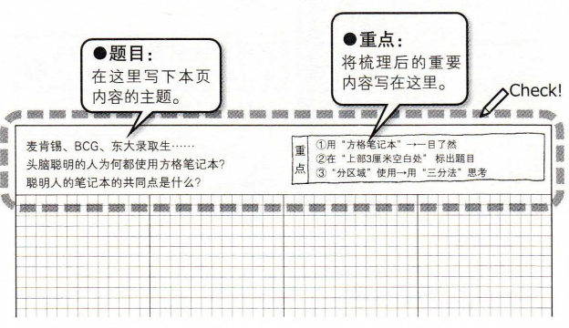
- 一句话表达这页的最重要的内容
- 表达“论点、问题核心”，推断出“结论、应该怎么做”
- 一页一主题
舒适的方格笔记本和笔
书写舒适会提高记笔记的积极性
大量书写，大量舍弃
10000页联系
学习笔记本
记忆， 思考，传达
- 记忆性笔记本（学习笔记本）
- 思考型笔记本（工作笔记本）
- 传达型笔记本（提案、博弈笔记本）
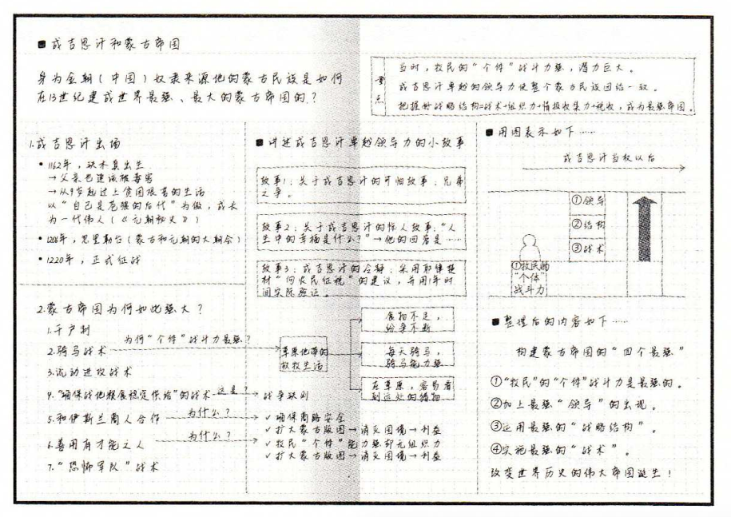
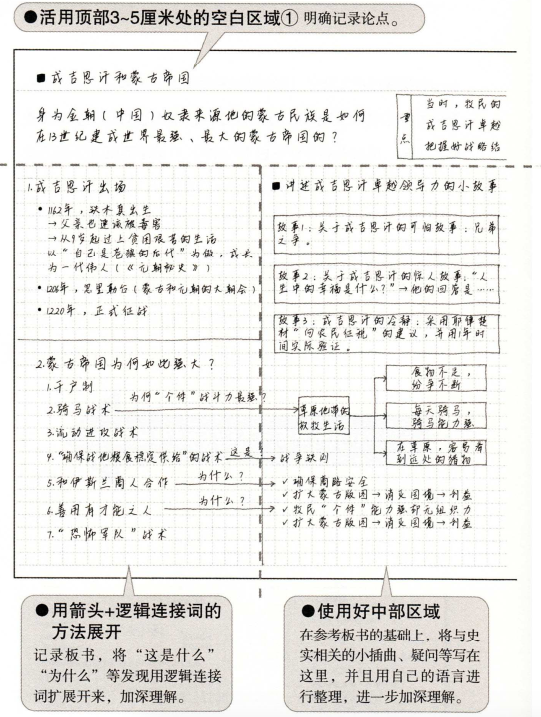
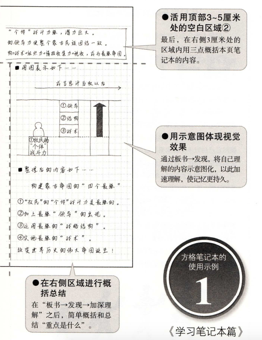
- 不要照抄板书
- 看黑板-》印在大脑中-》不看黑板，将印在大脑中的内容重现在笔记本上
- 使用‘两页一主题’ 的方式使用学习笔记本：学习时新知识量很大
标题区
- 题目：这是一篇关于什么的讲义
- 重点：记录需要掌握的主要内容
三等分内容区
- 左：板书区域
- 中：老师点评，自己的所思所想区域
- 右：解决疑问，总结概括区域
中部区域是重点
记录自己的疑问，想法，看能否在老师讲课后得到答案
使用自己的‘逻辑连接词’将‘发现’故事化
使用适合自己的逻辑连接词
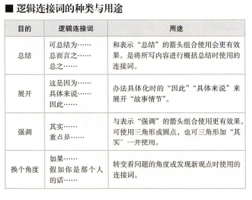
与三种箭头搭配使用
展开、总结、强调
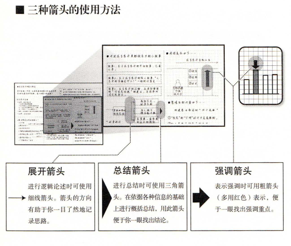
灵活使用右侧的‘概括总结区域’
本区域要记下‘要点’和‘疑问点’，锻炼‘概括能力’和‘提问能力’
理解力
- 清楚地区分‘能够理解的地方’和‘不理解的地方’
- 对于‘不理解的地方’，立刻采取行动解决疑问，如询问老师，上网搜索，或是询问相关知识领域的人
有意识地总结概括
- 右侧的总结区域写‘最想说的’，‘最重要的结论’
- 顶部区域用三点概括这些重要内容
- 即‘总之’，‘重要的是这三点’
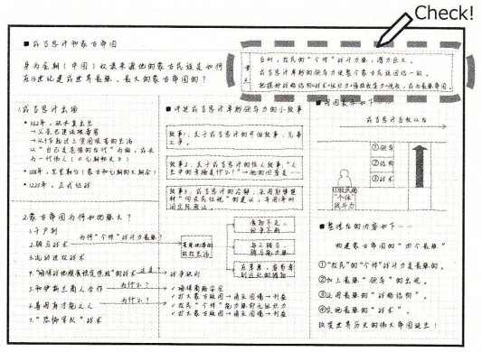
工作笔记本
工作笔记本是为了‘舍弃’
商务工作的基本任务就是从庞杂的信息中迅速找出与结果相关的重要信息并经整理得出结论。
需要不断练习
代谢不良的笔记本
- 按时间记录，而不是一页一主题
- 杂乱的‘视觉突出效果’
在记笔记的同时，应该养成快速思考‘这个信息是否有必要记在笔记本上’的习惯
关键是‘从论点开始’
正确设定论点：询问
工作的第一步是向对方详细确认“问题是什么”。通过彻底的‘询问’，找出对方的问题点在哪里，看出解决问题的方向。
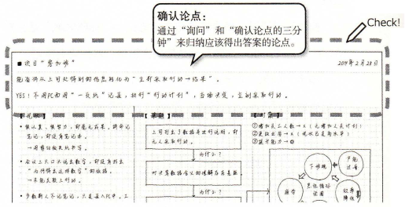
确认论点的三分钟
情况一：当接受要求时，养成‘用三分钟确认论点’的习惯
应主动用三分钟确认： 1. 对方的想法是什么 2. 想表达的论点和重点是什么 3. 希望制作的大致轮廓和大致印象是什么
情况二：在笔记本的标题区域预先写好“论点”后再交给部下
- 告诉部下所期望完成的报告书的大体轮廓
- 确认部下是否明白的你希望传达的意思
- 可将论点细化为分论点
提案笔记本
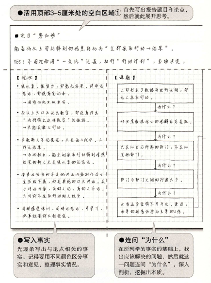
笔记本的终极目标是‘提案笔记本’,即‘能得出可靠结论的提案笔记本’。
最重要的是学会逻辑性思维
每天坚持‘按逻辑性思维记笔记’，可以充分锻炼逻辑思维。
设定论点是重中之重。要按照事实-》解释-》行动及结论的顺序记笔记。
要基于事实思考问题
所有资料都要用‘黄金三分法’
将一种模式贯彻到底
白色书写板 - 上方：会议主题 - 左侧：事实区域 - 右侧：意见区域
用不同颜色区分‘事实’和‘意见’
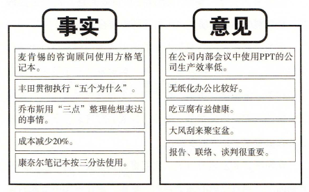
- 事实：蓝色笔 - 用自己眼睛看到的
- 意见：黑色笔 - 自己心里的意见
加入固有名词，数词，动词
使用文章记笔记
- 固有名词：表示特定人物、地点、事件、时期等的名词 （东京大学，丰田）
- 数词：用数字表示时间、年份、人数等 （1192年，7个习惯）
- 动词：表示动作的词语。关键在于眼前能否浮现出做动作的画面 （听，交谈，发邮件）
使用‘逻辑连接词’，‘箭头，‘方形’解决‘五个为什么’问题
连问‘五个为什么’
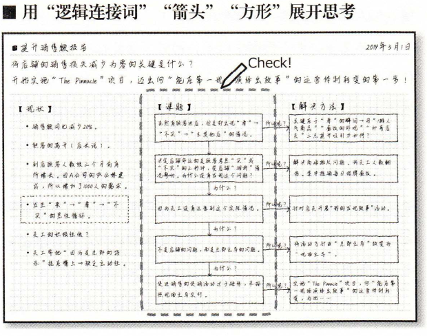
右侧的‘行动区域’
以‘行动’为出口
外资咨询顾问在分析事实，思考问题，制作提案文件等所有阶段都是以思考‘如何给顾客提出一个能达到理想结果的具体实施方案’为基础的。
最佳行动是‘有画面感’和‘真实的’
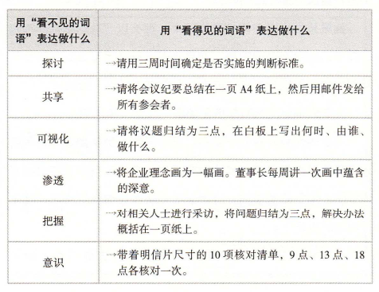
标题区域写出结论
少即是多
将结论提炼为一个信息
博弈笔记本
将笔记本变为‘向他人传递想法的工具’
目标：笔记 = PPT
三个要点
1. 提案笔记本 = 一页报纸新闻
报纸的头版布局与方格笔记本的记录方法完全一样
- 标出题目
- 附上图表
- 写出文章
2. 信息为先 - 先传达结论，图表第二
不能一上来就画图
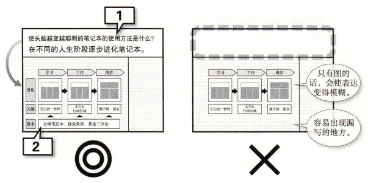
3. 从希望达到的‘心理效果’逆向选择图表 - 4种
图表1：之前/之后的对比效果
关键：设定‘比较参照物’
- 先判断想传达信息的关键点，即‘重点内容’，逐个列在纸页左侧
- 每个内容写一个之前/之后的对比
- 写出结论
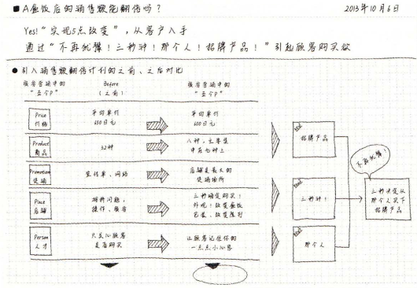
图表2：瀑布效果 - 一目了然
人对‘落差’有反应
台阶图：将数据图表化并加上‘瀑布效果’： 企业年度财报
关键：‘只强调重点’
- 绘制一个变化前起点/变化后终点数据的图表
- 使用台阶条形图表示这个图表 （台阶不要过多，3个最好）
- 得出‘关键信息’和‘结论’
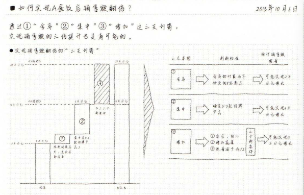
图表3：金字塔效果 - 制定计划/目标/方案
人对‘顶点’有反应
关键：‘从上到下’展开
- 第一层：明确目标
- 第二层：实现目标的3个重点
- 第三层： 完成三个重点应采取的行动
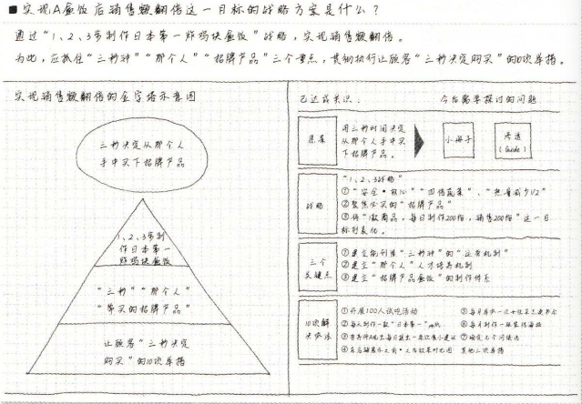
图表四：高楼效果 - 呈现故事
条形图展示‘高低落差’：人对‘高低差’很敏感
关键：将焦点放在‘有意义的差距’上
- 画出条形图
- 强调条形图中的差距
- 在右侧写出具体解释
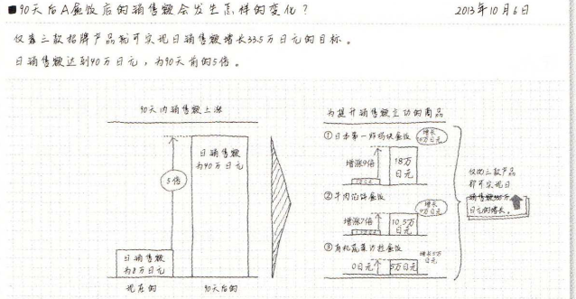
Comments
Comments powered by Disqus